PHP2Shell: ИИ нашёл дыры в PHP, и интернет срочно обновляется
Разбираем по шагам, что случилось, при чём тут ИИ и что сделать с твоим сайтом сегодня.
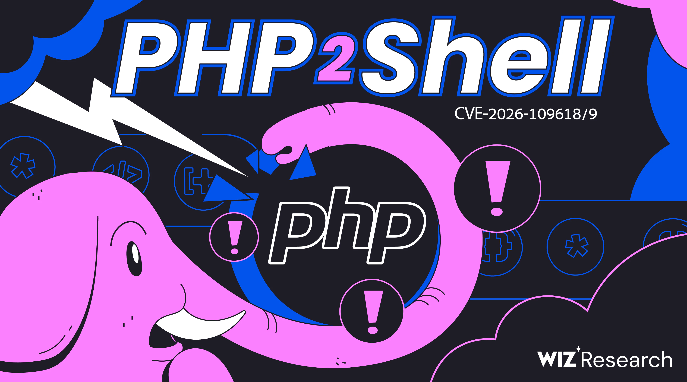
01 Премьер Японии просит обновиться сегодня вечером
21 октября в 15:55 МСК премьер-министр Японии Санаэ Такаити пишет в X:
皆様に、今夜に対応して頂きたい大至急のお願いです。
«Очень срочная просьба ко всем: пожалуйста, примите меры сегодня же вечером».
Пост посмотрели больше 26 млн раз. Речь про PHP, язык, на котором работает примерно 70% сайтов в мире. В нём нашли две опасные дыры, и помог их найти ИИ. Дыры пролежали в коде больше 10 лет.
02 Что случилось простыми словами
Нашли две уязвимости. У каждой дыры в софте есть номер в общем каталоге, он называется CVE. Наши номера: CVE-2026-109618 и CVE-2026-109619.
Опасность дыры меряют по шкале CVSS от 0 до 10. У обеих 9.2, это критический уровень. Оценку подтверждают американская база NVD и немецкое ведомство BSI.
Злоумышленник запускает свои команды на чужом сервере. Логин и пароль ему для этого не нужны.
Похоже на Heartbleed 2014 года. Из памяти сервера можно вытащить пароли, токены, API-ключи и сертификаты.
Затронуты почти все версии PHP, начиная с 5.4. Через PHP под ударом WordPress, Drupal, Joomla, Magento, Laravel и MediaWiki (движок Википедии).
Патч — это исправление, обновлённая версия программы, где дыра закрыта. Детали утекли в сеть вечером 20.10. Патчи вышли 21.10 в 17:00 МСК:
Для PHP 8.1 и старше официальных патчей нет. С таких версий надо переезжать на 8.2 и выше.
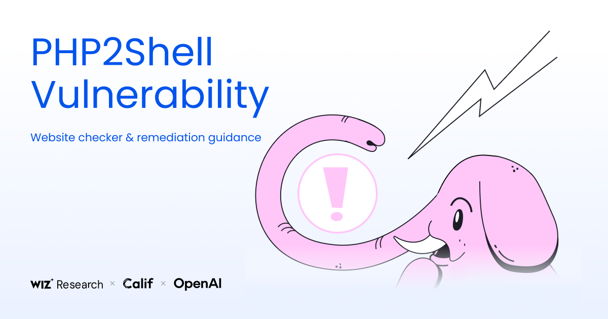
03 Таймлайн дня (МСК)
- 20.10 23:27@k_firsov публикует видео эксплойта: «php2shell. Tomorrow is a helluva day». Эксплойт — это готовая программа, которая использует дыру для атаки.
- 21.10 02:18@silascutler оценивает: уязвимых хостов в сети, скорее всего, больше 1,3 млн.
- 06:02Cloudflare включает защитные правила WAF всем клиентам, бесплатным тоже. WAF — фильтр перед сайтом, он отсекает подозрительные запросы.
- 10:43CTO Cloudflare Дейн Кнехт: видим первые атаки. Патча ещё нет.
- 12:45Финляндия: госцентр Valtori из предосторожности закрывает доступ из интернета к публичным госсервисам.
- 13:07NCSC UK: готовьтесь обновляться сразу. Если не выходит, отключайте систему.
- 14:35Hadrian фиксирует массовые атаки.
- 15:44levelsio отключает от сети все свои сайты и VPS.
- 15:55Пост премьер-министра Японии.
- 16:38Wiz публикует разбор PHP2Shell.
- 17:00Выходят патчи PHP.
- 17:04OpenAI рассказывает, как их модель помогла найти дыры.
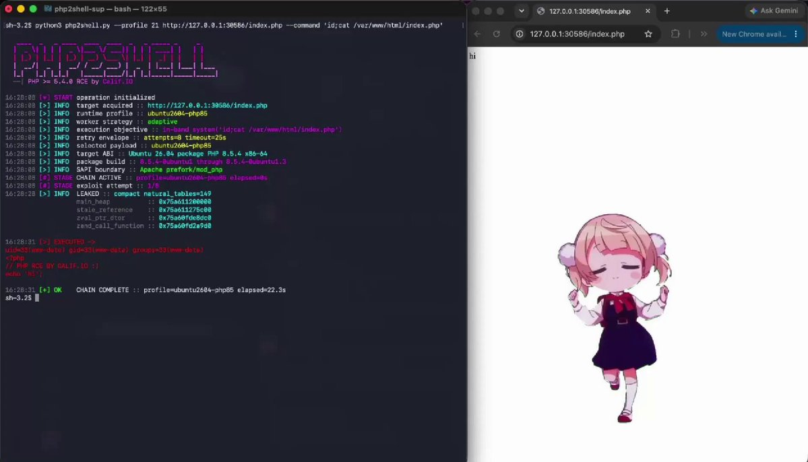
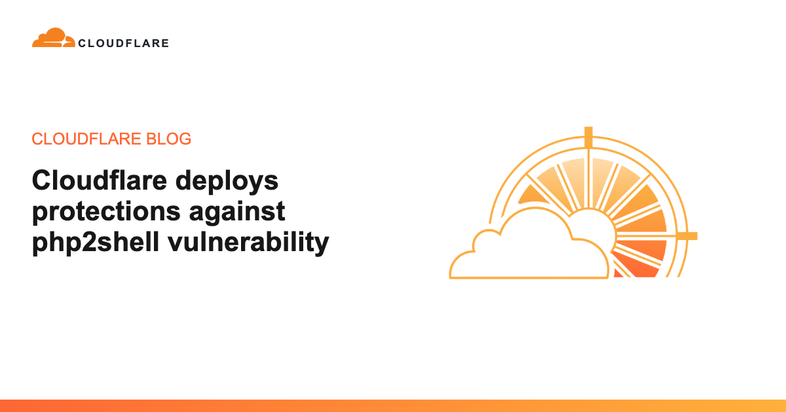
04 Главное для нас: дыры нашёл ИИ
Компания Calif нашла критическую дыру с помощью модели GPT-5.6 Sol от OpenAI. Wiz нашла обе дыры независимо, тоже с ИИ. OpenAI собрала коалицию: разработчики PHP, исследователи, Cloudflare и другие два месяца готовили исправление.
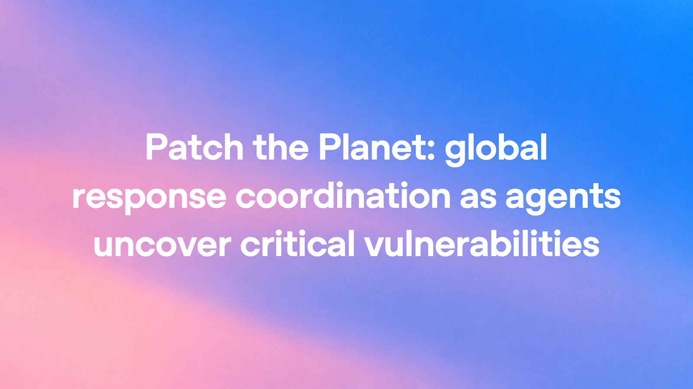
«the same capabilities can also help attackers rapidly develop offensive tools and exploits»
«Те же возможности помогают атакующим быстро делать инструменты для атак и эксплойты».
OpenAI
«we expect similar findings to increase sharply in the coming months»
«Мы ожидаем, что в ближайшие месяцы таких находок станет резко больше».
OpenAI
«As expected in 2026, AI did most of the work here.»
«Как и положено в 2026-м, бо́льшую часть работы сделал ИИ».
Саги Цадик, Wiz
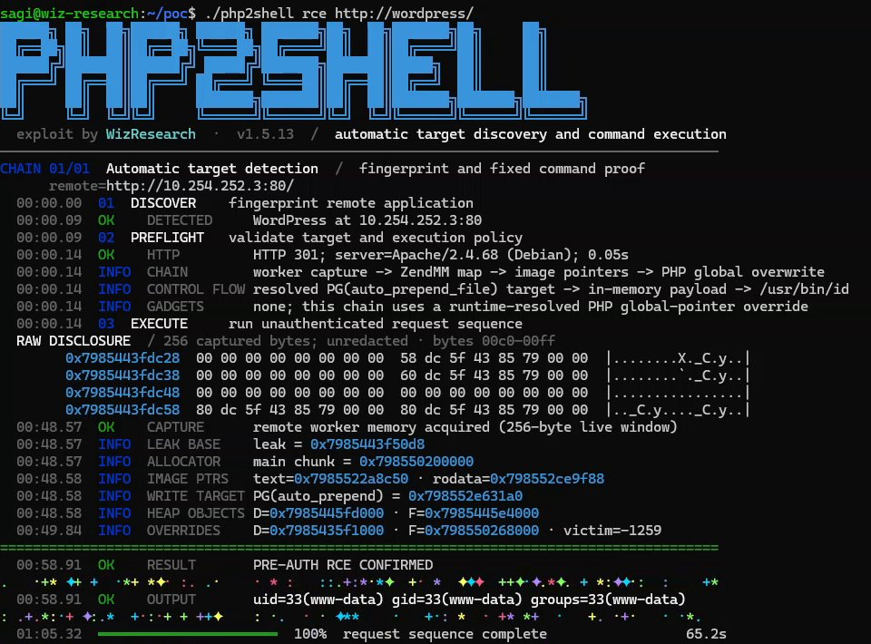
Google рассказывает про свою модель Gemini 4 Argon, её тоже проверяли в Wiz:
«found more than two times more vulnerabilities than baseline models»
«Нашла больше чем вдвое больше уязвимостей, чем базовые модели».
Google
Anthropic в своём исследовании проверяла, как быстро модели пишут эксплойт по свежему патчу (на дырах Firefox). Их сильнейшая модель Mythos Preview сделала первый рабочий эксплойт меньше чем за час.
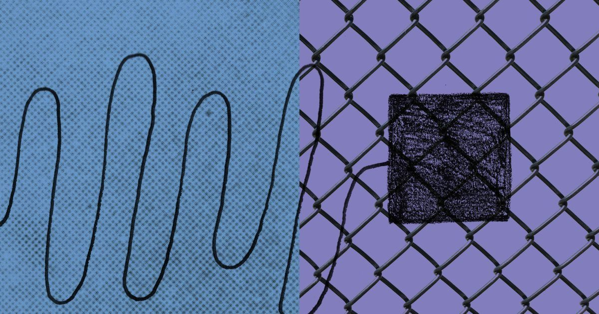
Calif уточняет: первым дыру нашёл и сделал рабочий эксплойт исследователь @lcfr_hax, его пост датирован 5 августа.
CTO Cloudflare Дейн Кнехт говорит прямо:
«This won't be the last one. Models will keep finding bugs like this in software everyone runs.»
«Это не последний случай. Модели продолжат находить такие баги в софте, которым пользуются все».
Дейн Кнехт, Cloudflare
05 Что происходит сейчас
Атаки идут. Cloudflare видит их с утра. У watchTowr статус уязвимости: Exploitation: In The Wild, то есть её используют в реальных атаках. Hadrian пишет: «Exploitation is still happening at scale» («Атаки по-прежнему идут массово»).
Удачных взломов публично пока никто не подтвердил. Huntress: «No indicators of compromise have been confirmed yet» («Признаков взлома пока не подтверждено»).
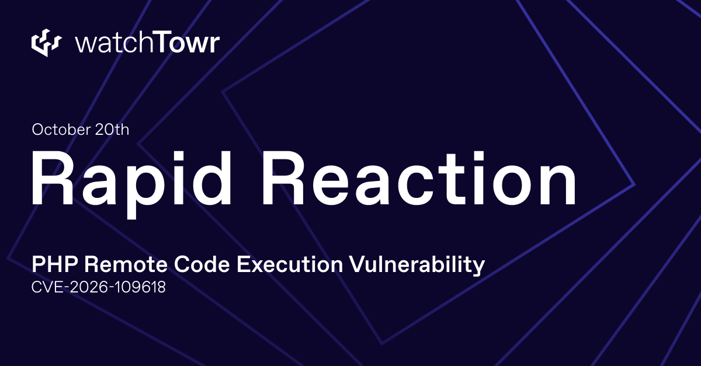
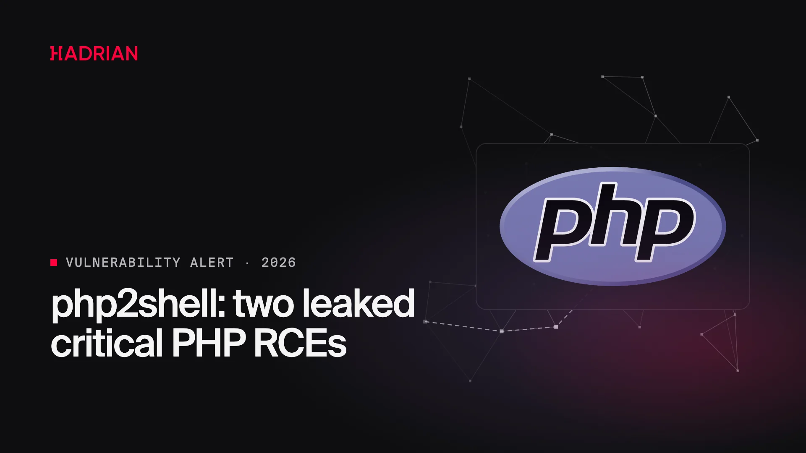
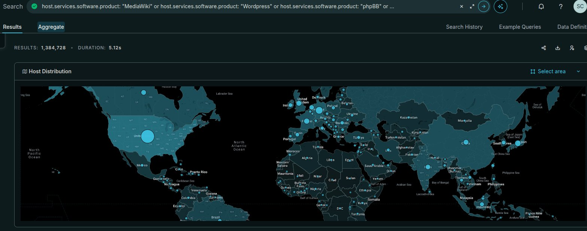
Кто отключился из предосторожности
- Финляндия: госцентр Valtori в 12:45 МСК закрыл входящий трафик из интернета к публичным госсервисам Финляндии (налоговая, электронные услуги полиции, земельная служба). Взлома не было.
- Нидерланды (по NU.nl): Mijn Overheid, NotuBiz, сайты FC Twente и FC Groningen, Tweakers. Сайт NCSC-NL тоже ушёл в офлайн.
- levelsio выключил все свои сайты и VPS до выхода патча.
- BBC: пропали страницы нескольких программ, например Doctor Who и The Traitors. Связь с PHP BBC не подтвердила.
- Nintendo: сервисы на техработах. Связь с PHP не подтверждена (The Record, Dexerto).
- Cygames (Umamusume): по данным Dexerto, компания прямо связала свои техработы с уязвимостью PHP.
О взломах никто из них не сообщал.
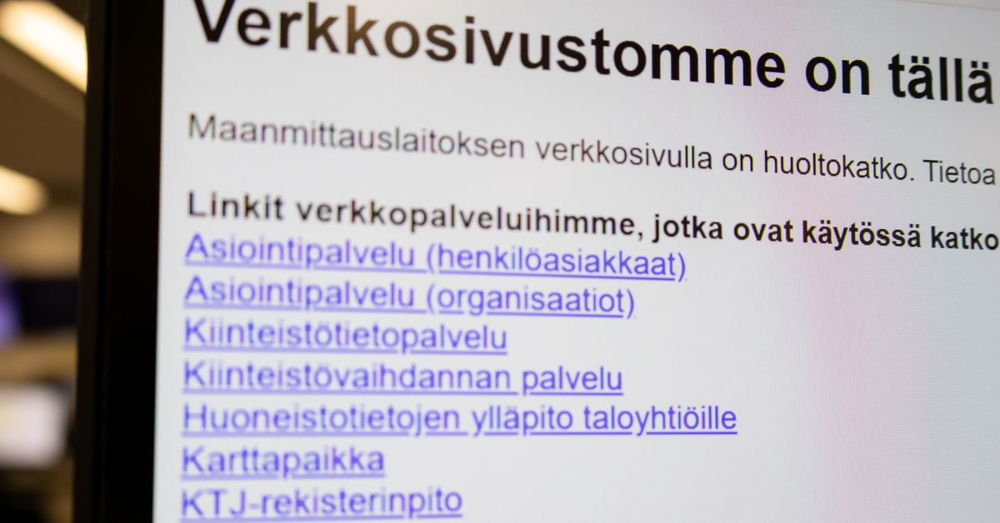
Слухи
- слух Отключение госсайтов Франции.
- слух Отключения Dread и BreachForums.
06 Мемы и X
Англоязычный X весь день шутит.
- «php2shell. Tomorrow is a helluva day» («Завтра будет адский денёк») — пост, с которого всё началось.
- @marcohextor: clankers жгут ВВП небольшой страны в токенах, чтобы хакнуть 70% веба. Clanker в X — ироничное прозвище для ИИ.
- levelsio: «Ask your clanker to install it!» («Попроси своего ИИ поставить патч!»).
- levelsio рассказал про знакомого админа в большой компании: «Спасибо, пропатчу через пару дней, я сейчас в OOO» (в отпуске).
- «PHP2SHELL TOOK DOWN RULE34 NOO».
- «the internet had a day… it's wednesday» («у интернета был тот ещё денёк… и это среда»).
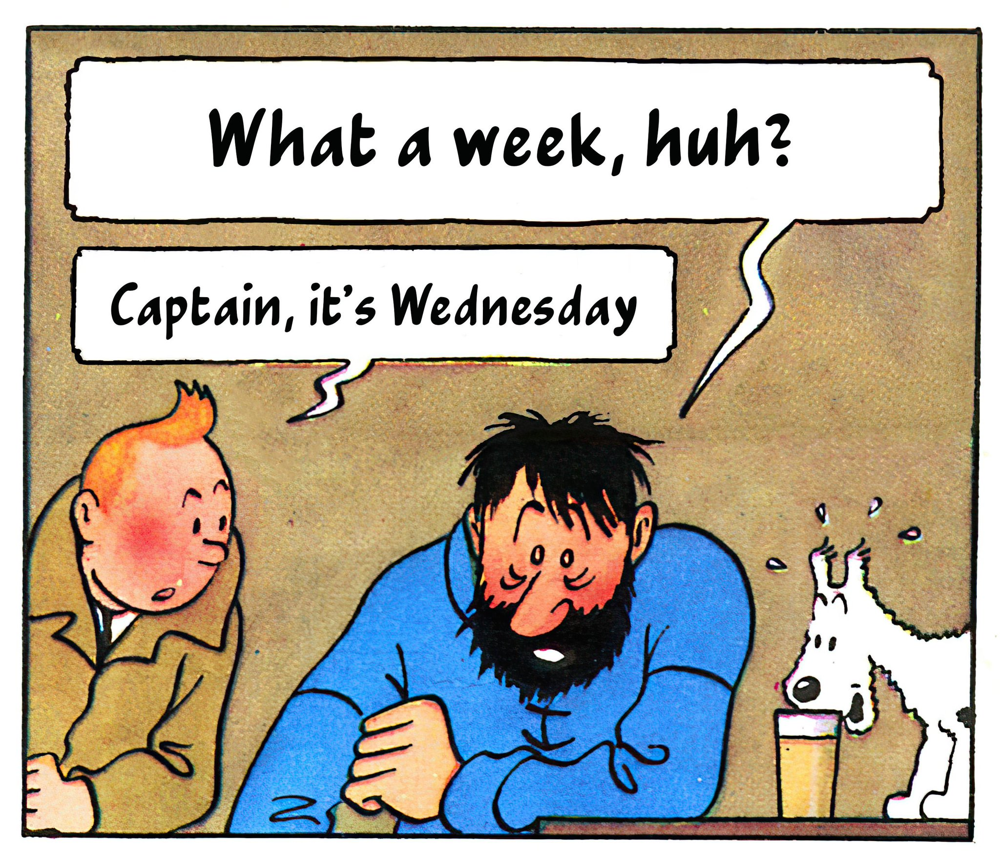
В Японии вспоминают Log4Shell и сравнивают реакцию премьеров:
Русский X почти молчит. Лучшее, что нашлось, у @0xhrH: «Прям день открытых дверей какой-то».
07 Осторожно, мусор
PoC (proof of concept) — пример кода, который показывает, что дыра работает. На GitHub уже около 180 репозиториев с «PoC» для PHP2Shell. Многие из них пустышки.
- @Stekkz проверил 29 публичных репозиториев. На чистом PHP не воспроизвёлся ни один.
- Tenable предупреждает: среди таких репозиториев встречается вредонос.
- Уже есть мемкоин $PHP2SHELL. Ссылку не даю.
Новичкам: ничего из ленты не скачивай и не запускай. Ни «PoC», ни «сканеры», ни «патчи» из чужих репозиториев.
08 Что делать
Облачный Битрикс24
Битрикс обновит PHP сам. Пока он временно ограничил формы и работу с файлами. Подробности в блоке «Что в России».
Сайт на обычном хостинге
Зайди в панель хостинга и посмотри версию PHP. Если она ниже 8.2.35 / 8.3.36 / 8.4.27 / 8.5.12, переключи на исправленную. Если переключателя нет, напиши в поддержку и дай ссылку на CVE-2026-109618 и CVE-2026-109619. Beget временно ограничил загрузки и формы.
Свой сервер (VPS)
Отдай ИИ-ассистенту новость с php.net и попроси обновить PHP по шагам. Статус по дистрибутивам:
- Debian: DSA-6574-1 для php8.4 (trixie). На трекере Debian php8.2 в bookworm тоже отмечен исправленным, версия 8.2.35 (DLA-4848-1).
- Red Hat: патча пока нет.
- Ubuntu: действует USN-8948-1.
- Google App Engine (PHP 8.2+) обновляется сам.
Если патч поставить пока нельзя
Временная мера от Sansec: заблокировать запросы multipart/form-data на nginx или Apache. Учти: загрузка файлов на сайте при этом перестанет работать. Режим обслуживания WordPress или Magento от этой дыры не спасает.
Признаки атаки
По The Hacker News: странные multipart-запросы, серии ошибок 500, огромные cookie PHPSESSID, необъяснимые рестарты воркеров.

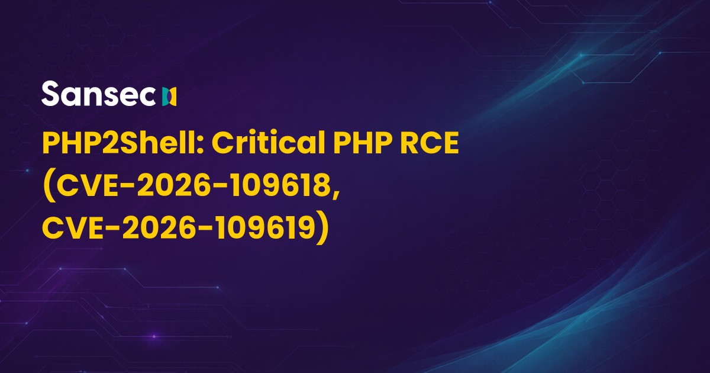
09 Что в России
Срез на 18:47 МСК, 21.10.
Исправленный PHP (8.2.35 / 8.3.36 / 8.4.27 / 8.5.12) пока не объявил ни один российский хостинг или панель.
- 1С-Битрикс (UPD 17:57): обновление серверов облачного Битрикс24 готовят и тестируют. Временные ограничения сохраняются: формы, сделки в CRM, письма, бизнес-процессы. Функции будут возвращать поэтапно.
- Beget обещает в приоритете обновить PHP и снять ограничения. Сейчас ограничены загрузки и формы, для облачных баз данных закрыты порты 80/443, Adminer и phpMyAdmin временно недоступны.
- Timeweb Cloud советует VPS-клиентам обновиться самим.
- ISPmanager: готовых сборок пока нет.
- REG.RU, Sprinthost, Selectel, FirstVDS, FastPanel, Jino, Hostland, Fozzy, Tilda: заявлений нет.
- НКЦКИ и БДУ ФСТЭК: записей про PHP2Shell пока нет.
- Взломы в .ru: подтверждённых нет. Positive Technologies, F6, Kaspersky, BI.ZONE и Solar об этом молчат.
Зайди в панель и проверь версию PHP. С 8.1 и ниже переходи на 8.2+ и жди от хостинга сообщения об исправленной версии. На своём VPS PHP обновляешь ты сам. Обновление WordPress или Битрикса PHP не обновляет.
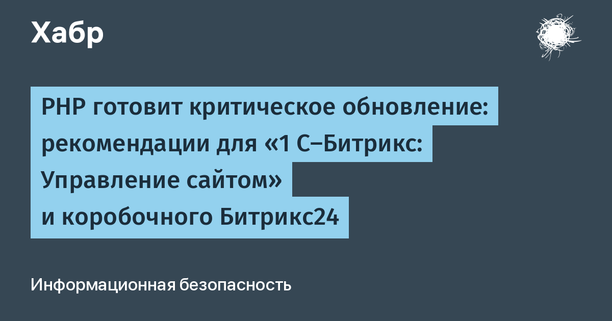
10 Новая реальность
ИИ находит дыры всё быстрее. Дыры в PHP пролежали больше десяти лет. По словам Wiz, с передовыми моделями их нашли и связали в рабочую атаку меньше чем за неделю. Срочные обновления вроде сегодняшнего будут случаться чаще.
«we expect similar findings to increase sharply in the coming months»
«В ближайшие месяцы таких находок станет резко больше».
OpenAI
Что с этим делать: знай, на чём крутятся твои сайты, держи версии свежими и подпишись на новости своего хостинга. С обновлением поможет ИИ-ассистент.
Заходи в чат Вайбкодеров → t.me/vibecod3rs11 Источники
- Wiz: PHP2Shell https://www.wiz.io/blog/php2shell-php-rce
- php2shell.com https://www.php2shell.com/
- php.net: архив новостей 2026 https://www.php.net/archive/2026.php
- GitHub advisory GHSA-w8hw-w9fx-j79w https://github.com/php/php-src/security/advisories/GHSA-w8hw-w9fx-j79w
- GitHub advisory GHSA-6wmf-4rv5-p3rp https://github.com/php/php-src/security/advisories/GHSA-6wmf-4rv5-p3rp
- NVD: CVE-2026-109618 https://nvd.nist.gov/vuln/detail/CVE-2026-109618
- BSI: предупреждение https://www.bsi.bund.de/SharedDocs/Cybersicherheitswarnungen/DE/2026/2026-297981-1032.html
- OpenAI: Patch the Planet https://openai.com/index/coordinated-disclosure-of-critical-vulnerabilities
- Anthropic: N-days https://www.anthropic.com/research/n-days
- Cloudflare Blog https://blog.cloudflare.com/php-vulnerabilities-waf-protection/
- watchTowr: FAQ https://watchtowr.com/intelligence/php-cve-2026-109618-faq/
- Hadrian: alert https://hadrian.io/vulnerability-alerts/php2shell-leaked-critical-php-rce-cve-2026-109618-cve-2026-109619
- Sansec: PHP2Shell https://sansec.io/research/php2shell
- SecurityWeek https://www.securityweek.com/php2shell-mass-exploitation-looms-for-leaked-critical-php-flaws/
- Debian security tracker https://security-tracker.debian.org/tracker/CVE-2026-109618
- Red Hat Bugzilla 2556842 https://bugzilla.redhat.com/show_bug.cgi?id=2556842
- Google Cloud Blog https://cloud.google.com/blog/products/identity-security/responding-to-core-php-vulnerabilities-cve-2026-109618-cve-2026-109619
- NU.nl: лайвблог https://www.nu.nl/tech/6413897/live-grote-nederlandse-sites-uit-voorzorg-offline-wegens-kwetsbaarheid-php.html
- BBC News https://www.bbc.co.uk/news/articles/cmly0lg3w5x2o
- The Record https://therecord.media/php-script-vulnerabilities-warnings
- Yle News: Финляндия https://yle.fi/a/74-20252600
- Turun Sanomat https://www.ts.fi/a/7116818
- Helsingin Sanomat https://www.hs.fi/suomi/art-2000012357566.html
- Dexerto: игры на техработах https://www.dexerto.com/pokemon/pokemon-umamusume-and-other-major-games-taken-offline-over-critical-php-vulnerability-3420823/
- W3Techs: серверные языки в .ru https://w3techs.com/technologies/segmentation/tld-ru-/programming_language
- Хабр https://habr.com/ru/news/1097256/
- 1С-Битрикс https://www.1c-bitrix.ru/about/news/29334792/
- Битрикс24 в Telegram https://t.me/bitrix24_ru/3220
- Beget: новость https://beget.com/ru/news/2026/uyazvimost-v-php-ot-21-10-2026
- Beget в Telegram https://t.me/beget_official/565
- Timeweb Cloud в Telegram https://t.me/timewebcloud_alerts/418
- ISPmanager в Telegram https://t.me/ispmanager/712
Посты в X
- @takaichi_sanae x.com/takaichi_sanae/status/2112890642590564386
- @OpenAI x.com/OpenAI/status/2112907856018309586
- @dok2001 x.com/dok2001/status/2112811965735202970
- @NCSC x.com/NCSC/status/2112848265074847828
- @levelsio x.com/levelsio/status/2112887674251976827
- @sagitz_ x.com/sagitz_/status/2112901380080058778
- @sagitz_ x.com/sagitz_/status/2112901387122332066
- @levelsio x.com/levelsio/status/2112891358226645334
- @dok2001 x.com/dok2001/status/2112909127060259086
- @dok2001 x.com/dok2001/status/2112921277870866880
- @Cloudflare x.com/Cloudflare/status/2112911026437935381
- @Google x.com/Google/status/2112914740058181739
- @gdb x.com/gdb/status/2112921529650688312
- @k_firsov x.com/k_firsov/status/2112641845926989944
- @wiz_io x.com/wiz_io/status/2112899825305780607
- @calif_io x.com/calif_io/status/2112914613297668583
- @Stekkz x.com/Stekkz/status/2112872031163383852
- @rafalohaki x.com/rafalohaki/status/2112903909282881773
- @silascutler x.com/silascutler/status/2112684895608652003
- @TheHackersNews x.com/TheHackersNews/status/2112917025047670787
- @ncsc_nl x.com/ncsc_nl/status/2112874187719385243
- @marcohextor x.com/marcohextor/status/2112666048000561307
- @levelsio x.com/levelsio/status/2112923845267210658
- @theh924 x.com/theh924/status/2112857555731091906
- @prthgo x.com/prthgo/status/2112923929631433168
- @moznion x.com/moznion/status/2112921603839594828
- @0xhrH x.com/0xhrH/status/2112815579065114865
- @XakepRU x.com/XakepRU/status/2112855413767225368
- @mzemlu777 x.com/mzemlu777/status/2112932212362351084
Просмотры постов сняты 21.10.2026 около 18:50 МСК.